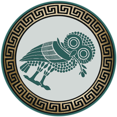

The Owl of Athena encodes document classification as semantic state through orientation and color. Each designation is a distance-preserving isometry drawn from the orthogonal group O(2). The system uses three transforms to classify every publication in the DNS Tool corpus.
|
NORMATIVE T = I det = +1 (x, y) → (x, y) “This is the standard.” RFC 2119 MUST / SHALL |
 NON-NORMATIVE T = σv det = −1 (x, y) → (−x, y) “This reflects the standard.” Informative / Advisory (NOTE) |
CRITICAL T = C2 det = +1 (x, y) → (−x, −y) “This inverts the standard.” RFC 2119 MUST NOT / SHALL NOT |
Redundant encoding: Color, orientation, and context label provide three independent channels. The semaphore remains distinguishable at small render sizes and in degraded single-channel contexts. Each transform is a distance-preserving isometry in O(2). Standards mapping: Normative = RFC 2119 MUST/SHALL. Non-normative = Informative/NOTE. Critical = RFC 2119 MUST NOT/SHALL NOT; CVE/Security advisory.
Every piece of user-facing text must pass both gates simultaneously. Passing one gate but failing the other is a failure.
The words chosen must be clear, communicative, and logical to the reader. Text should educate, not obscure.
| Requirement | Level | Measurement |
|---|---|---|
| Jargon with first use | MUST | Every acronym expanded on first use per page, or linked |
| Active voice | SHOULD | Prefer “The SPF record authorizes...” over passive |
| Sentence length | SHOULD | Body copy sentences should not exceed 35 words |
| One idea per paragraph | SHOULD | Each paragraph should advance one concept |
| Action-oriented findings | MUST | State what was observed, why it matters, what to do |
| RFC citation | MUST | Claims about protocol behavior must cite specific RFC section |
| Transformative language | SHOULD | Prefer language that teaches rather than restates |
The visual presentation must not cause strain or impede comprehension. The reader’s eyes matter.
| Requirement | Level | Measurement |
|---|---|---|
| Minimum font size | MUST | No rendered text below 0.75rem (12px) |
| Body text minimum | SHOULD | Primary reading text at least 0.875rem (14px) |
| Contrast ratio (normal text) | MUST | WCAG 2.1 AA: minimum 4.5:1 against background |
| Contrast ratio (large text) | MUST | WCAG 2.1 AA: minimum 3:1 for 18px+ or 14px+ bold |
| Text overflow | MUST | No text beyond container boundary |
| Line length | SHOULD | Body text ≤ 80 characters per line |
| Line height | SHOULD | Body text at least 1.5 line-height |
| Scotopic mode | MUST | Minimum 4.5:1 contrast against covert background (#0a0c10) |
| Focus indicators | MUST | Visible focus indicators on all interactive elements |
DNS Tool serves three primary audiences with different reading contexts:
Context: Analyzing a domain at a terminal, possibly at 2 AM, under incident pressure.
Needs: Precision, RFC references, verification commands, machine-parseable output.
Vision concern: Extended reading sessions on dark backgrounds. Font size and contrast directly affect error rate.
Context: Reading a brief before a board meeting or vendor assessment.
Needs: Risk posture in business terms, remediation cost/complexity, decision points.
Vision concern: May be reading on phone, tablet, or printed page. Layout must be responsive.
Context: 20+ years in infosec, may have age-related vision changes (presbyopia, reduced contrast sensitivity).
Needs: Everything both audiences need, plus accommodation for reduced visual acuity.
Vision concern: This is the primary reason the font-size floor exists. 10px text that “looks fine” to a 25-year-old developer may be unreadable to the 55-year-old CISO.
| Check | Tool | Threshold |
|---|---|---|
| Font size floor | CSS audit | Zero sub-0.75rem values |
| Contrast ratio | squirrelscan | Zero errors |
| Text overflow | Manual viewport testing | No horizontal scrollbar at 375px, 768px, 1024px, 1440px |
| Heading hierarchy | squirrelscan | No skipped levels |
| Lighthouse accessibility | Chrome Lighthouse | Score ≥ 95 |
| Clarity | Can a non-technical executive understand the main finding within 10 seconds? |
| Clarity | Does every acronym have a first-use expansion or link? |
| Clarity | Does every security finding include a “what to do” action? |
| Vision | At 50cm / 20″, can all text be read on a 13″ laptop at 100% zoom? |
| Vision | In scotopic mode, does all text pass WCAG AA contrast (4.5:1)? |
| Vision | On a 375px mobile viewport, does all content fit without horizontal scroll? |
| Vision | Are interactive elements large enough for touch targets (44×44px)? |
Enforced values as of v26.38.26:
| Property | Value | Contrast Ratio | Standard |
|---|---|---|---|
| Font size floor | 0.75rem (12px) | — | All .u-fs-* utility classes enforce this minimum |
.text-muted | #9ca3af on #0d1117 | ~7.45:1 | WCAG AA (requires 4.5:1) |
.card.bg-dark .text-muted | #adb5bd on #21262d | ~8.8:1 | WCAG AA |
| Secondary text minimum | #8b949e on #0d1117 | ~6.15:1 | Replaces prior #6c757d (~4.04:1) |
[ACCOUNTABILITY] — If the text is unreadable, the finding is unaccountable: it exists but cannot be acted upon.
[ZERO_WASTE] — Text that cannot be read is wasted: it consumes space without delivering value.
[VERBOSE+++++] — Clarity does not mean brevity. It means every word earns its place by advancing the reader’s understanding.
Vision as Ethics — Causing eye strain to a reader who came for security intelligence is a design failure with real consequences.
Owl Semaphore System — Classification Ledger
Normative
T = I det = +1
(x, y) → (x, y)
“This is the standard.”
RFC 2119 MUST / SHALL
Non-Normative
T = σv det = −1
(x, y) → (−x, y)
“This reflects the standard.”
Informative / Advisory (NOTE)
Critical
T = C2 det = +1
(x, y) → (−x, −y)
“This inverts the standard.”
RFC 2119 MUST NOT / SHALL NOT
Composition Identities in O(2)
σ ∘ σ = I · R(θ1) ∘ R(θ2) = R(θ1+θ2) · σ ∘ R(θ) = σθ